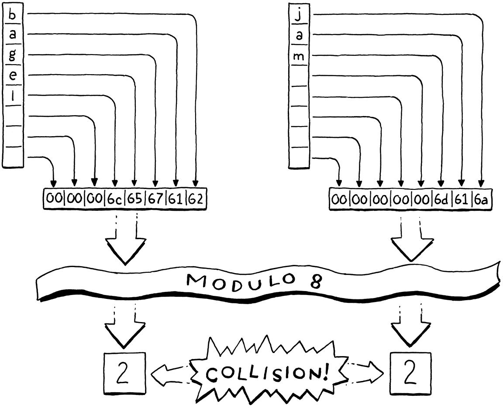
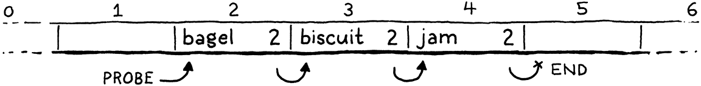

Hash Tables
Hash, x. There is no definition for this word—nobody knows what hash is.
Ambrose Bierce, The Unabridged Devil’s Dictionary
Before we can add variables to our burgeoning virtual machine, we need some way to look up a value given a variable’s name. Later, when we add classes, we’ll also need a way to store fields on instances. The perfect data structure for these problems and others is a hash table. 在向这个发展迅速的虚拟机中添加变量之前，我们需要某种方法来根据给定的变量名称查询变量值。稍后，等到我们添加类时，也需要某种方法来存储实例中的字段。对于这些问题和其它问题，完美的数据结构就是哈希表。
You probably already know what a hash table is, even if you don’t know it by that name. If you’re a Java programmer, you call them “HashMaps”. C# and Python users call them “dictionaries”. In C++, it’s an “unordered map”. “Objects” in JavaScript and “tables” in Lua are hash tables under the hood, which is what gives them their flexibility. 你可能已经知道什么是哈希表了，即使你不知道它的名字。如果你是Java程序员，你把它们称为“HashMap”。C#和Python用户则称它们为“字典”。在C++中，它是“无序映射”。JavaScript中的“对象”和Lua中的“表”本质上都是哈希表，这赋予了它们灵活性。
A hash table, whatever your language calls it, associates a set of keys with a set of values. Each key/value pair is an entry in the table. Given a key, you can look up its corresponding value. You can add new key/value pairs and remove entries by key. If you add a new value for an existing key, it replaces the previous entry. 哈希表（无论你的语言中怎么称呼它）是将一组键和一组值关联起来。每个键/值对是表中的一个条目。给定一个键，可以查找它对应的值。你可以按键添加新的键/值对或删除条目。如果你为已有的键添加新值，它就会替换原先的条目。
Hash tables appear in so many languages because they are incredibly powerful. Much of this power comes from one metric: given a key, a hash table returns the corresponding value in constant time, regardless of how many keys are in the hash table. 哈希表之所以出现在这么多的语言中，是因为它们非常强大。这种强大的能力主要来自于一个指标：给定一个键，哈希表会在常量时间内返回对应的值，不管哈希表中有多少键。
That’s pretty remarkable when you think about it. Imagine you’ve got a big stack of business cards and I ask you to find a certain person. The bigger the pile is, the longer it will take. Even if the pile is nicely sorted and you’ve got the manual dexterity to do a binary search by hand, you’re still talking O(log n). But with a hash table, it takes the same time to find that business card when the stack has ten cards as when it has a million. 仔细想想，这是非常了不起的。想象一下，你有一大堆名片，我让你去找出某个人。这堆名片越大，花的时间就越长。即使这堆名片被很好地排序，而且你有足够的能力来手动进行二分查找，你的复杂度仍然是O(log n)。但是对于哈希表来说，无论这摞名片有10张还是100万张，你找到那张特定名片所需的时间都是一样的。
20 . 1An Array of Buckets 桶数组
A complete, fast hash table has a couple of moving parts. I’ll introduce them one at a time by working through a couple of toy problems and their solutions. Eventually, we’ll build up to a data structure that can associate any set of names with their values. 一个完整、快速的哈希表需要一些组件。我会通过几个小问题及其解决方案来逐一介绍它们。最终，我们将构建一个数据结构，可以将任何一组名称和它们的值关联起来。
For now, imagine if Lox was a lot more restricted in variable names. What if a variable’s name could only be a single lowercase letter. How could we very efficiently represent a set of variable names and their values? 现在，假定Lox在变量名称上有更多的限制。如果一个变量的名称只能是一个小写字母该怎么办？我们如何高效地表示一组变量名和它们的值？
With only 26 possible variables (27 if you consider underscore a “letter”, I
guess), the answer is easy. Declare a fixed-size array with 26 elements. We’ll
follow tradition and call each element a bucket. Each represents a variable
with a starting at index zero. If there’s a value in the array at some
letter’s index, then that key is present with that value. Otherwise, the bucket
is empty and that key/value pair isn’t in the data structure.
由于只有26个可能的变量（如果你认为下划线是一个“字母”，我猜是27个），答案很简单。声明一个具有26个元素的固定大小的数组。我们遵循传统，将每个元素称为一个桶（bucket）。每个元素代表一个变量，a从索引下标0开始。如果数组中某个字母对应的索引位置有值，那么这个键就与该值相对应。否则的话，桶是空的，该键/值对在数据结构中不存在。
Memory usage is great—just a single, reasonably sized array. There’s some waste from the empty buckets, but it’s not huge. There’s no overhead for node pointers, padding, or other stuff you’d get with something like a linked list or tree. 这个方案的内存占用情况很好——只是一个大小合理的数组。空桶会有一些浪费，但不是很大。没有节点指针、填充以及其它类似于链表或树的开销。
Performance is even better. Given a variable name—its character—you can
subtract the ASCII value of a and use the result to index directly into the
array. Then you can either look up the existing value or store a new value
directly into that slot. It doesn’t get much faster than that.
性能就更好了。给定一个变量名——它的字符——你可以减去a的ASCII值，并使用结果直接在数组中进行索引。然后，你可以查找已有的值或将新值存储到对应的槽中。没有比这更快的了。
This is sort of our Platonic ideal data structure. Lightning fast, dead simple, and compact in memory. As we add support for more complex keys, we’ll have to make some concessions, but this is what we’re aiming for. Even once you add in hash functions, dynamic resizing, and collision resolution, this is still the core of every hash table out there—a contiguous array of buckets that you index directly into. 这是一种柏拉图式的理想数据结构。快如闪电，非常简单，而且内存紧凑。当我们进一步支持更复杂的键时，就必须作出一些让步，但这仍是我们的目标所在。即使加入了哈希函数、动态调整大小和冲突解决，这仍然是每个哈希表的核心——一个可以直接索引到的连续桶数组。
20 . 1 . 1Load factor and wrapped keys 负载因子和封装键
Confining Lox to single-letter variables would make our job as implementers easier, but it’s probably no fun programming in a language that gives you only 26 storage locations. What if we loosened it a little and allowed variables up to eight characters long? 将Lox限制为单字母变量，会使我们作为实现者的工作更容易，但在一种只提供26个存储位置的语言中编程可能没有什么乐趣。如果我们稍微放宽限制，允许变量的长度到8个字符呢？
That’s small enough that we can pack all eight characters into a 64-bit integer and easily turn the string into a number. We can then use it as an array index. Or, at least, we could if we could somehow allocate a 295,148 petabyte array. Memory’s gotten cheaper over time, but not quite that cheap. Even if we could make an array that big, it would be heinously wasteful. Almost every bucket would be empty unless users started writing way bigger Lox programs than we’ve anticipated. 它足够小，我们可以将所有8个字符打包成一个64比特的整数，轻松地将字符串变成一个数字。然后我们可以把它作为数组索引。至少，如果我们能够以某种方式分配295,148 PB的数组，也是可以的。随着时间的推移，内存越来越便宜了，但还没那么便宜。即便我们可以创建这么大的数组，也会造成严重的浪费。除非用户会编写比我们的预期大得多的Lox程序，否则几乎每个桶都是空的。
Even though our variable keys cover the full 64-bit numeric range, we clearly don’t need an array that large. Instead, we allocate an array with more than enough capacity for the entries we need, but not unreasonably large. We map the full 64-bit keys down to that smaller range by taking the value modulo the size of the array. Doing that essentially folds the larger numeric range onto itself until it fits the smaller range of array elements. 尽管我们的变量键覆盖了整个64位数字范围，但我们显然不需要那么大的数组。相反地，我们会分配一个数组，它的容量足以容纳我们需要的条目，但又不会大得不合理。通过对数组的大小进行取模，我们将完整的64位键值映射到较小的范围。这样做本质上是将较大的数值范围不断折叠，直到适合较小的数组元素范围。
For example, say we want to store “bagel”. We allocate an array with eight elements, plenty enough to store it and more later. We treat the key string as a 64-bit integer. On a little-endian machine like Intel, packing those characters into a 64-bit word puts the first letter, “b” (ASCII value 98), in the least-significant byte. We take that integer modulo the array size (8) to fit it in the bounds and get a bucket index, 2. Then we store the value there as usual. 例如，假设我们想要存储“bagel”。我们分配一个有8个元素的数组，足够存储它，之后还可以存储更多。我们把键字符串当作一个64位整数。在Intel这样的小端机器上，将这些字符打包成一个64位的字时，会将第一个字母“b”（ASCII值 98）放在最低的有效字节中。我们将这个整数与数组大小（8）取模以适应边界，并得到桶索引2。然后我们像往常一样，将值存储在那里。
Using the array size as a modulus lets us map the key’s numeric range down to fit an array of any size. We can thus control the number of buckets independently of the key range. That solves our waste problem, but introduces a new one. Any two variables whose key number has the same remainder when divided by the array size will end up in the same bucket. Keys can collide. For example, if we try to add “jam”, it also ends up in bucket 2. 使用数组的大小作为模数，可以让我们将键的数值范围向下适配到任意大小的数组。因此，我们可以独立于键的范围来控制桶的数量。这就解决了我们的浪费问题，但是也引入了一个新的问题。任意两个变量，如果它们的键值除以数组大小时有相同的余数，最后都会被放在同一个桶中。键会发生冲突。举例来说，如果我们尝试添加“jam”，它也会出现在2号桶中。
We have some control over this by tuning the array size. The bigger the array, the fewer the indexes that get mapped to the same bucket and the fewer the collisions that are likely to occur. Hash table implementers track this collision likelihood by measuring the table’s load factor. It’s defined as the number of entries divided by the number of buckets. So a hash table with five entries and an array of 16 elements has a load factor of 0.3125. The higher the load factor, the greater the chance of collisions. 我们可以通过调整数组的大小来控制这个问题。数组越大，映射到同一个桶的索引就越少，可能发生的冲突也就越少。哈希表实现者评估这种冲突的可能性的方式就是计算表的负载因子。它的定义是条目的数量除以桶的数量。因此，一个包含5个条目和16个元素的数组的哈希表，其负载系数为0.3125。负载因子越大，发生冲突的可能性就越大。
One way we mitigate collisions is by resizing the array. Just like the dynamic arrays we implemented earlier, we reallocate and grow the hash table’s array as it fills up. Unlike a regular dynamic array, though, we won’t wait until the array is full. Instead, we pick a desired load factor and grow the array when it goes over that. 减少冲突的一种方法是调整数组的大小。就像我们前面实现的动态数组一样，我们在哈希表的数组被填满时，重新分配并扩大该数组。但与常规的动态数组不同的是，我们不会等到数组填满。相反，我们选择一个理想的负载因子，当数组的负载因子超过该值时，我们就扩大数组。
20 . 2Collision Resolution 冲突解决
Even with a very low load factor, collisions can still occur. The birthday paradox tells us that as the number of entries in the hash table increases, the chance of collision increases very quickly. We can pick a large array size to reduce that, but it’s a losing game. Say we wanted to store a hundred items in a hash table. To keep the chance of collision below a still-pretty-high 10%, we need an array with at least 47,015 elements. To get the chance below 1% requires an array with 492,555 elements, over 4,000 empty buckets for each one in use. 即使负载因子很低，仍可能发生碰撞。生日悖论告诉我们，随着哈希表中条目数量的增加，碰撞的概率会很快增加。我们可以选择一个很大的数组规模来减少这种情况，但这是注定失败的。假设我们想在哈希表中存储100个条目，要想使碰撞几率保持在10%以下，我们需要一个至少有47,105个元素的数组。要想使碰撞几率低于1%，需要一个有492,555个元素的数组，每使用一个元素就需要超过4000个空桶。
A low load factor can make collisions rarer, but the pigeonhole principle tells us we can never eliminate them entirely. If you’ve got five pet pigeons and four holes to put them in, at least one hole is going to end up with more than one pigeon. With 18,446,744,073,709,551,616 different variable names, any reasonably sized array can potentially end up with multiple keys in the same bucket. 低负载因子可以使冲突变少，但是鸽笼原理告诉我们，我们永远无法完全消除冲突。如果你有5只宠物鸽，有4个洞来放它们，至少有一个洞最终会有不止一个鸽子。既然有18,446,744,073,709,551,616个不同的变量名，任何大小合理的数组都有可能在同一个桶中出现多个键。
Thus we still have to handle collisions gracefully when they occur. Users don’t like it when their programming language can look up variables correctly only most of the time. 因此，当冲突发生时，我们仍然需要优雅地处理它们。用户并不喜欢他们的编程语言只在大多数情况下能正确地查找变量。
20 . 2 . 1Separate chaining 拉链法
Techniques for resolving collisions fall into two broad categories. The first is separate chaining. Instead of each bucket containing a single entry, we let it contain a collection of them. In the classic implementation, each bucket points to a linked list of entries. To look up an entry, you find its bucket and then walk the list until you find an entry with the matching key. 解决冲突的技术可以分为两大类。第一类是拉链法。每个桶中不再包含一个条目，而是包含条目的集合。在经典的实现中，每个桶都指向一个条目的链表。要查找一个条目，你要先找到它的桶，然后遍历列表，直到找到包含匹配键的条目。

In catastrophically bad cases where every entry collides in the same bucket, the data structure degrades into a single unsorted linked list with O(n) lookup. In practice, it’s easy to avoid that by controlling the load factor and how entries get scattered across buckets. In typical separate-chained hash tables, it’s rare for a bucket to have more than one or two entries. 在最坏的情况下，每个条目都碰撞到同一个桶中，数据结构会退化成一个无序链表，查询复杂度为O(n)。在实践中，通过控制负载因子和条目在桶中的分散方式，可以很容易地避免这种情况。在典型的拉链哈希表中，一个桶中很少会有超过一个或两个条目的情况。
Separate chaining is conceptually simple—it’s literally an array of linked lists. Most operations are straightforward to implement, even deletion which, as we’ll see, can be a pain. But it’s not a great fit for modern CPUs. It has a lot of overhead from pointers and tends to scatter little linked list nodes around in memory which isn’t great for cache usage. 拉链法在概念上很简单——它实际上就是一个链表数组。大多数操作实现都可以直接实现，甚至是删除（正如我们将看到的，这可能会很麻烦）。但它并不适合现代的CPU。它有很多指针带来的开销，并且倾向于在内存中分散的小的链表节点，这对缓存的使用不是很好。
20 . 2 . 2Open addressing 开放地址法
The other technique is called open addressing or (confusingly) closed hashing. With this technique, all entries live directly in the bucket array, with one entry per bucket. If two entries collide in the same bucket, we find a different empty bucket to use instead. 另一种技术称为开放地址或（令人困惑的）封闭哈希。使用这种技术时，所有的条目都直接存储在桶数组中，每个桶有一个条目。如果两个条目在同一个桶中发生冲突，我们会找一个其它的空桶来代替。
Storing all entries in a single, big, contiguous array is great for keeping the memory representation simple and fast. But it makes all of the operations on the hash table more complex. When inserting an entry, its bucket may be full, sending us to look at another bucket. That bucket itself may be occupied and so on. This process of finding an available bucket is called probing, and the order that you examine buckets is a probe sequence. 将所有条目存储在一个单一的、大的、连续的数组中，对于保持内存表示方式的简单和快速是非常好的。但它使得哈希表上的所有操作变得非常复杂。当插入一个条目时，它的桶可能已经满了，这就会让我们去查看另一个桶。而那个桶本身可能也被占用了，等等。这个查找可用存储桶的过程被称为探测，而检查存储桶的顺序是探测序列。
There are a number of algorithms for determining which buckets to probe and how to decide which entry goes in which bucket. There’s been a ton of research here because even slight tweaks can have a large performance impact. And, on a data structure as heavily used as hash tables, that performance impact touches a very large number of real-world programs across a range of hardware capabilities. 有很多算法可以用来确定要探测哪些桶，以及如何决定哪个条目要放在哪个桶中。这方面有大量的研究，因为即使是轻微的调整也会对性能产生很大的影响。而且，对于像哈希表这样大量使用的数据结构来说，这种性能影响涉及到跨一系列硬件功能的大量实际的程序。
As usual in this book, we’ll pick the simplest one that gets the job done efficiently. That’s good old linear probing. When looking for an entry, we look in the first bucket its key maps to. If it’s not in there, we look in the very next element in the array, and so on. If we reach the end, we wrap back around to the beginning. 依照本书的惯例，我们会选择最简单的方法来有效地完成工作。这就是良好的老式线性探测法。当查找一个条目时，我们先在它的键映射的桶中查找。如果它不在里面，我们就在数组的下一个元素中查找，以此类推。如果我们到了数组终点，就绕回到起点。
The good thing about linear probing is that it’s cache friendly. Since you walk the array directly in memory order, it keeps the CPU’s cache lines full and happy. The bad thing is that it’s prone to clustering. If you have a lot of entries with numerically similar key values, you can end up with a lot of colliding, overflowing buckets right next to each other. 线性探测的好处是它对缓存友好。因为你是直接按照内存顺序遍历数组，所以它可以保持CPU缓存行完整且正常。坏处是，它容易聚集。如果你有很多具有相似键值的条目，那最终可能会产生许多相互紧挨的冲突、溢出的桶。
Compared to separate chaining, open addressing can be harder to wrap your head around. I think of open addressing as similar to separate chaining except that the “list” of nodes is threaded through the bucket array itself. Instead of storing the links between them in pointers, the connections are calculated implicitly by the order that you look through the buckets. 与拉链法相比，开放地址法可能更难理解。我认为开放地址法与拉链法是类似的，区别在于“列表”中的节点是通过桶数组本身进行的。它们之间的链接并没有存储在指针中，而是通过查看桶的顺序隐式计算的。
The tricky part is that more than one of these implicit lists may be interleaved together. Let’s walk through an example that covers all the interesting cases. We’ll ignore values for now and just worry about a set of keys. We start with an empty array of 8 buckets. 棘手的部分是，这些隐式的列表中可能会有多个交错在一起。让我们通过一个例子，涵盖所有有意思的情况。我们现在先不考虑值，只关心一组键。首先从一个包含8个桶的数组开始。

We decide to insert “bagel”. The first letter, “b” (ASCII value 98), modulo the array size (8) puts it in bucket 2. 我们决定插入“bagel”。第一个字母“b”（ASCII值是98），对数组大小（8）取模后，将其放入2号桶中。

Next, we insert “jam”. That also wants to go in bucket 2 (106 mod 8 = 2), but that bucket’s taken. We keep probing to the next bucket. It’s empty, so we put it there. 接下来，我们插入“jam”。它也应该放在2号桶中（106 mod 8 = 2），但是这个桶已经被占用了。我们继续探测下一个桶。它是空的，所以我们把它放入其中。

We insert “fruit”, which happily lands in bucket 6. 我们插入“fruit”，它愉快地落在6号桶中。
Likewise, “migas” can go in its preferred bucket 5. 同样，“migas”可以放在其首选的5号桶中。

When we try to insert “eggs”, it also wants to be in bucket 5. That’s full, so we skip to 6. Bucket 6 is also full. Note that the entry in there is not part of the same probe sequence. “Fruit” is in its preferred bucket, 6. So the 5 and 6 sequences have collided and are interleaved. We skip over that and finally put “eggs” in bucket 7. 当我们尝试插入“eggs”时，它也想放在5号桶中。满了，我们跳到6号桶。6号桶也满了。请注意，其中的条目并不是当前探测序列的一部分。“Fruit” 在其首选的6号桶中。因此，这里是5号和6号序列发生了碰撞，并交错在一起。我们跳过这个，最后把“eggs”放在7号桶中。

We run into a similar problem with “nuts”. It can’t land in 6 like it wants to. Nor can it go into 7. So we keep going. But we’ve reached the end of the array, so we wrap back around to 0 and put it there. 我们在“nuts”上遇到了同样的问题。它不能按预期进入6号桶中，也不能进入7号桶中。所以我们继续前进，但是我们已经到了数组的末端，所以我们回到0并将其放入0号桶。

In practice, the interleaving turns out to not be much of a problem. Even in separate chaining, we need to walk the list to check each entry’s key because multiple keys can reduce to the same bucket. With open addressing, we need to do that same check, and that also covers the case where you are stepping over entries that “belong” to a different original bucket. 在实践中，这种交错并不是什么大问题。即使是在拉链法中，我们也需要遍历列表来检查每个条目的键，因为多个键会落入同一个桶中。使用开放地址法，我们需要做同样的检查，这也涵盖了你需要遍历“属于”不同原始桶的条目的情况。
20 . 3Hash Functions 哈希函数
We can now build ourselves a reasonably efficient table for storing variable names up to eight characters long, but that limitation is still annoying. In order to relax the last constraint, we need a way to take a string of any length and convert it to a fixed-size integer. 现在，我们可以为自己构建一个相当有效的表，来存储长度不超过8字符的变量名，但这个限制仍然令人讨厌。为了放宽最后一个限制，我们需要一种方法，将任意长度的字符串转换成固定大小的整数。
Finally, we get to the “hash” part of “hash table”. A hash function takes some larger blob of data and “hashes” it to produce a fixed-size integer hash code whose value depends on all of the bits of the original data. A good hash function has three main goals: 终于，我们来到了“哈希表”的“哈希”部分。哈希函数接受一些更大的数据块，并将其“哈希”生成一个固定大小的整数哈希码，该值取决于原始数据的每一个比特。一个好的哈希函数有三个主要目标：
-
It must be deterministic. The same input must always hash to the same number. If the same variable ends up in different buckets at different points in time, it’s gonna get really hard to find it. 它必须是确定性的。相同的输入必须总是哈希到相同的数字。如果同一个变量在不同的时间点出现在不同的桶中，那就很难找到它了。
-
It must be uniform. Given a typical set of inputs, it should produce a wide and evenly distributed range of output numbers, with as few clumps or patterns as possible. We want it to scatter values across the whole numeric range to minimize collisions and clustering. 它必须是均匀的。给定一组典型的输入，它应该产生一个广泛而均匀分布的输出数字范围，尽可能少地出现簇或模式。我们希望它能在整个数字范围内分散数值，以尽量减少碰撞和聚类。
-
It must be fast. Every operation on the hash table requires us to hash the key first. If hashing is slow, it can potentially cancel out the speed of the underlying array storage. 它必须是快速的。对哈希表的每个操作都需要我们首先对键进行哈希。如果哈希计算很慢，就有可能会抵消底层数组存储的速度优势。
-
It must be deterministic. The same input must always hash to the same number. If the same variable ends up in different buckets at different points in time, it’s gonna get really hard to find it.
-
It must be uniform. Given a typical set of inputs, it should produce a wide and evenly distributed range of output numbers, with as few clumps or patterns as possible. We want it to scatter values across the whole numeric range to minimize collisions and clustering.
-
It must be fast. Every operation on the hash table requires us to hash the key first. If hashing is slow, it can potentially cancel out the speed of the underlying array storage.
There is a veritable pile of hash functions out there. Some are old and optimized for architectures no one uses anymore. Some are designed to be fast, others cryptographically secure. Some take advantage of vector instructions and cache sizes for specific chips, others aim to maximize portability. 这里有一堆名副其实的哈希函数。有些是旧的，并且针对已经不再使用的架构进行了优化。有些是为了快速设计的，有些则是加密安全的。有的利用了特定芯片的矢量指令和缓存大小，有的则旨在最大限度地提高可移植性。
There are people out there for whom designing and evaluating hash functions is, like, their jam. I admire them, but I’m not mathematically astute enough to be one. So for clox, I picked a simple, well-worn hash function called FNV-1a that’s served me fine over the years. Consider trying out different ones in your code and see if they make a difference.
OK, that’s a quick run through of buckets, load factors, open addressing, collision resolution, and hash functions. That’s an awful lot of text and not a lot of real code. Don’t worry if it still seems vague. Once we’re done coding it up, it will all click into place. 好了，我们快速浏览了桶、负载因子、开放地址法、冲突解决和哈希函数。这里有非常多的文字，但没有多少真正的代码。如果它看起来仍然很模糊，不要担心。一旦我们完成了编码，一切都会全部就位。
20 . 4Building a Hash Table 构建哈希表
The great thing about hash tables compared to other classic techniques like balanced search trees is that the actual data structure is so simple. Ours goes into a new module. 与平衡搜索树等其它经典技术相比，哈希表的好处在于，它实际的数据结构非常简单。我们进入一个新的模块。
create new file
#ifndef clox_table_h #define clox_table_h #include "common.h" #include "value.h" typedef struct { int count; int capacity; Entry* entries; } Table; #endif
A hash table is an array of entries. As in our dynamic array earlier, we keep
track of both the allocated size of the array (capacity) and the number of
key/value pairs currently stored in it (count). The ratio of count to capacity
is exactly the load factor of the hash table.
哈希表是一个条目数组。就像前面的动态数组一样，我们既要跟踪数组的分配大小（容量，capacity）和当前存储在其中的键/值对数量（计数，count）。数量与容量的比值正是哈希表的负载因子。
Each entry is one of these: 每个条目都是这样的：
#include "value.h"
typedef struct { ObjString* key; Value value; } Entry;
typedef struct {
It’s a simple key/value pair. Since the key is always a string, we store the ObjString pointer directly instead of wrapping it in a Value. It’s a little faster and smaller this way. 这是一个简单的键/值对。因为键总是一个字符串，我们直接存储ObjString指针，而不是将其包装在Value中。这样做速度更快，体积更小。
To create a new, empty hash table, we declare a constructor-like function. 为了创建一个新的、空的哈希表，我们声明一个类似构造器的函数。
} Table;
add after struct Table
void initTable(Table* table);
#endif
We need a new implementation file to define that. While we’re at it, let’s get all of the pesky includes out of the way. 我们需要一个新的实现文件来定义它。既然说到这里，让我们把所有讨厌的依赖文件都搞定。
create new file
#include <stdlib.h> #include <string.h> #include "memory.h" #include "object.h" #include "table.h" #include "value.h" void initTable(Table* table) { table->count = 0; table->capacity = 0; table->entries = NULL; }
As in our dynamic value array type, a hash table initially starts with zero
capacity and a NULL array. We don’t allocate anything until needed. Assuming
we do eventually allocate something, we need to be able to free it too.
就像动态值数组类型一样，哈希表最初以容量0和NULL数组开始。等到需要的时候我们才会分配一些东西。假设我们最终分配了什么，我们也需要能够释放它。
void initTable(Table* table);
add after initTable()
void freeTable(Table* table);
#endif
And its glorious implementation: 以及其绚丽的实现：
add after initTable()
void freeTable(Table* table) { FREE_ARRAY(Entry, table->entries, table->capacity); initTable(table); }
Again, it looks just like a dynamic array. In fact, you can think of a hash
table as basically a dynamic array with a really strange policy for inserting
items. We don’t need to check for NULL here since FREE_ARRAY() already
handles that gracefully.
同样，它看起来就像一个动态数组。实际上，你基本可以把哈希表看作是一个动态数组，它具有一个非常奇怪的插入条目策略。在这里我们不需要检查NULL，因为FREE_ARRAY()已经优雅地处理了这个问题。
20 . 4 . 1Hashing strings 哈希字符串
Before we can start putting entries in the table, we need to, well, hash them. To ensure that the entries get distributed uniformly throughout the array, we want a good hash function that looks at all of the bits of the key string. If it looked at, say, only the first few characters, then a series of strings that all shared the same prefix would end up colliding in the same bucket. 在我们开始向表中加入条目之前，我们需要，嗯，哈希它们。为了确保条目均匀分布在整个数组中，我们需要一个能考虑键字符串所有比特位的好的哈希函数。如果它只着眼于前几个字符，那么共享相同前缀的一系列字符串最终会碰撞在同一个桶中。
On the other hand, walking the entire string to calculate the hash is kind of slow. We’d lose some of the performance benefit of the hash table if we had to walk the string every time we looked for a key in the table. So we’ll do the obvious thing: cache it. 另一方面，遍历整个字符串来计算哈希值是有点慢的。如果我们每次在哈希表中查找键时都要遍历字符串，就会失去哈希表的一些性能优势。所以我们要做一件显而易见的事：缓存它。
Over in the “object” module in ObjString, we add: 在“object”模块的ObjString中，添加：
char* chars;
in struct ObjString
uint32_t hash;
};
Each ObjString stores the hash code for its string. Since strings are immutable in Lox, we can calculate the hash code once up front and be certain that it will never get invalidated. Caching it eagerly makes a kind of sense: allocating the string and copying its characters over is already an O(n) operation, so it’s a good time to also do the O(n) calculation of the string’s hash. 每个ObjString 会存储其字符串的哈希码。由于字符串在Lox中是不可变的，所以我们可以预先计算一次哈希代码，并确保它永远不会失效。提前缓存它是有道理的：分配字符串并复制其字符已然是一个O(n)的操作了，所以这是一个很好的时机来执行字符串哈希的O(n)计算。
Whenever we call the internal function to allocate a string, we pass in its hash code. 每当我们调用内部函数来分配字符串时，我们就会传入其哈希码。
function allocateString()
replace 1 line
static ObjString* allocateString(char* chars, int length, uint32_t hash) {
ObjString* string = ALLOCATE_OBJ(ObjString, OBJ_STRING);
That function simply stores the hash in the struct. 该函数只是将哈希值存储在结构体中
string->chars = chars;
in allocateString()
string->hash = hash;
return string; }
The fun happens over at the callers. allocateString() is called from two
places: the function that copies a string and the one that takes ownership of an
existing dynamically allocated string. We’ll start with the first.
有趣的部分是在调用者中。allocateString()方法在两个地方被调用：复制字符串的函数和获取现有动态分配字符串所有权的函数。我们从第一个开始。
ObjString* copyString(const char* chars, int length) {
in copyString()
uint32_t hash = hashString(chars, length);
char* heapChars = ALLOCATE(char, length + 1);
No magic here. We calculate the hash code and then pass it along. 没有魔法。我们计算哈希码，然后把它传递出去。
memcpy(heapChars, chars, length); heapChars[length] = '\0';
in copyString()
replace 1 line
return allocateString(heapChars, length, hash);
}
The other string function is similar. 另一个字符串函数是类似的。
ObjString* takeString(char* chars, int length) {
in takeString()
replace 1 line
uint32_t hash = hashString(chars, length); return allocateString(chars, length, hash);
}
The interesting code is over here: 有趣的代码在这里：
add after allocateString()
static uint32_t hashString(const char* key, int length) { uint32_t hash = 2166136261u; for (int i = 0; i < length; i++) { hash ^= (uint8_t)key[i]; hash *= 16777619; } return hash; }
This is the actual bona fide “hash function” in clox. The algorithm is called “FNV-1a”, and is the shortest decent hash function I know. Brevity is certainly a virtue in a book that aims to show you every line of code. 这就是clox中真正的“哈希函数”。该算法被称为“FNV-1a”，是我所知道的最短的正统哈希函数。对于一本旨在向您展示每一行代码的书来说，简洁无疑是一种美德。
The basic idea is pretty simple, and many hash functions follow the same pattern. You start with some initial hash value, usually a constant with certain carefully chosen mathematical properties. Then you walk the data to be hashed. For each byte (or sometimes word), you mix the bits into the hash value somehow, and then scramble the resulting bits around some. 基本思想非常简单，许多哈希函数都遵循同样的模式。从一些初始哈希值开始，通常是一个带有某些精心选择的数学特性的常量。然后遍历需要哈希的数据。对于每个字节（有些是每个字），以某种方式将比特与哈希值混合，然后将结果比特进行一些扰乱。
What it means to “mix” and “scramble” can get pretty sophisticated. Ultimately, though, the basic goal is uniformity—we want the resulting hash values to be as widely scattered around the numeric range as possible to avoid collisions and clustering. “混合”和“扰乱”的含义可以变得相当复杂。不过，最终的基本目标是均匀——我们希望得到的哈希值尽可能广泛地分散在数组范围内，以避免碰撞和聚集。
20 . 4 . 2Inserting entries 插入条目
Now that string objects know their hash code, we can start putting them into hash tables. 现在字符串对象已经知道了它们的哈希码，我们可以开始将它们放入哈希表了。
void freeTable(Table* table);
add after freeTable()
bool tableSet(Table* table, ObjString* key, Value value);
#endif
This function adds the given key/value pair to the given hash table. If an entry
for that key is already present, the new value overwrites the old value. The
function returns true if a new entry was added. Here’s the implementation:
这个函数将给定的键/值对添加到给定的哈希表中。如果该键的条目已存在，新值将覆盖旧值。如果添加了新条目，则该函数返回true。下面是实现：
add after freeTable()
bool tableSet(Table* table, ObjString* key, Value value) { Entry* entry = findEntry(table->entries, table->capacity, key); bool isNewKey = entry->key == NULL; if (isNewKey) table->count++; entry->key = key; entry->value = value; return isNewKey; }
Most of the interesting logic is in findEntry() which we’ll get to soon. That
function’s job is to take a key and figure out which bucket in the array it
should go in. It returns a pointer to that bucket—the address of the Entry in
the array.
大部分有趣的逻辑都在findEntry()中，我们很快就会讲到。该函数的作用是接受一个键，并找到它应该放在数组中的哪个桶里。它会返回一个指向该桶的指针——数组中Entry的地址。
Once we have a bucket, inserting is straightforward. We update the hash table’s size, taking care to not increase the count if we overwrote the value for an already-present key. Then we copy the key and value into the corresponding fields in the Entry. 一旦有了桶，插入就很简单了。我们更新哈希表的大小，如果我们覆盖了一个已经存在的键的值，注意不要增加计数。然后，我们将键和值复制到Entry中的对应字段中。
We’re missing a little something here, though. We haven’t actually allocated the Entry array yet. Oops! Before we can insert anything, we need to make sure we have an array, and that it’s big enough. 不过，我们这里还少了点什么，我们还没有分配Entry数组。糟糕！在我们向其中插入数据之前，需要确保已经有一个数组，而且足够大。
bool tableSet(Table* table, ObjString* key, Value value) {
in tableSet()
if (table->count + 1 > table->capacity * TABLE_MAX_LOAD) { int capacity = GROW_CAPACITY(table->capacity); adjustCapacity(table, capacity); }
Entry* entry = findEntry(table->entries, table->capacity, key);
This is similar to the code we wrote a while back for growing a dynamic array.
If we don’t have enough capacity to insert an item, we reallocate and grow the
array. The GROW_CAPACITY() macro takes an existing capacity and grows it by
a multiple to ensure that we get amortized constant performance over a series
of inserts.
这与我们之前为扩展动态数组所写的代码相似。如果没有足够的容量插入条目，我们就重新分配和扩展数组。GROW_CAPACITY()宏会接受现有容量，并将其增长一倍，以确保在一系列插入操作中得到摊销的常数性能。
The interesting difference here is that TABLE_MAX_LOAD constant.
这里一个有趣的区别是TABLE_MAX_LOAD常量。
#include "value.h"
#define TABLE_MAX_LOAD 0.75
void initTable(Table* table) {
This is how we manage the table’s load factor. We don’t grow when the capacity is completely full. Instead, we grow the array before then, when the array becomes at least 75% full. 这就是我们管理表负载因子的方式。我们不会在容量全满的时候才进行扩展。相反，当数组达到75%满时，我们会提前扩展数组。
We’ll get to the implementation of adjustCapacity() soon. First, let’s look
at that findEntry() function you’ve been wondering about.
我们很快就会讨论adjustCapacity()的实现。首先，我们看看你一直很好奇的findEntry()函数。
add after freeTable()
static Entry* findEntry(Entry* entries, int capacity, ObjString* key) { uint32_t index = key->hash % capacity; for (;;) { Entry* entry = &entries[index]; if (entry->key == key || entry->key == NULL) { return entry; } index = (index + 1) % capacity; } }
This function is the real core of the hash table. It’s responsible for taking a
key and an array of buckets, and figuring out which bucket the entry belongs in.
This function is also where linear probing and collision handling come into
play. We’ll use findEntry() both to look up existing entries in the hash
table and to decide where to insert new ones.
这个函数是哈希表的真正核心。它负责接受一个键和一个桶数组，并计算出该条目属于哪个桶。这个函数也是线性探测和冲突处理发挥作用的地方。我们在查询哈希表中的现有条目以及决定在哪里插入新条目时，都会使用findEntry()方法。
For all that, there isn’t much to it. First, we use modulo to map the key’s hash code to an index within the array’s bounds. That gives us a bucket index where, ideally, we’ll be able to find or place the entry. 尽管如此，其中也没什么特别的。首先，我们通过取余操作将键的哈希码映射为数值边界内的一个索引值。这就给了我们一个桶索引，理想情况下，我们可以在这里找到或放置条目。
There are a few cases to check for: 有几种情况需要检查：
-
If the key for the Entry at that array index is
NULL, then the bucket is empty. If we’re usingfindEntry()to look up something in the hash table, this means it isn’t there. If we’re using it to insert, it means we’ve found a place to add the new entry. 如果数组索引处的Entry的键为NULL，则表示桶为空。如果我们使用findEntry()在哈希表中查找东西，这意味着它不存在。如果我们用来插入，这表明我们找到了一个可以插入新条目的地方。 -
If the key in the bucket is equal to the key we’re looking for, then that key is already present in the table. If we’re doing a lookup, that’s good—we’ve found the key we seek. If we’re doing an insert, this means we’ll be replacing the value for that key instead of adding a new entry. 如果桶中的键等于我们要找的键，那么这个键已经存在于表中了。如果我们在做查找，这很好——我们已经找到了要查找的键。如果我们在做插入，这意味着我们要替换该键的值，而不是添加一个新条目。
-
Otherwise, the bucket has an entry in it, but with a different key. This is a collision. In that case, we start probing. That’s what that
forloop does. We start at the bucket where the entry would ideally go. If that bucket is empty or has the same key, we’re done. Otherwise, we advance to the next element—this is the linear part of “linear probing”—and check there. If we go past the end of the array, that second modulo operator wraps us back around to the beginning. 否则，就是桶中有一个条目，但具有不同的键。这就是一个冲突。在这种情况下，我们要开始探测。这也就是for循环所做的。我们从条目理想的存放位置开始。如果这个桶是空的或者有相同的键，我们就完成了。否则，我们就前进到下一个元素——这就是“线性探测”的线性部分——并进行检查。如果我们超过了数组的末端，第二个模运算符就会把我们重新带回起点。
-
If the key for the Entry at that array index is
NULL, then the bucket is empty. If we’re usingfindEntry()to look up something in the hash table, this means it isn’t there. If we’re using it to insert, it means we’ve found a place to add the new entry. -
If the key in the bucket is equal to the key we’re looking for, then that key is already present in the table. If we’re doing a lookup, that’s good—we’ve found the key we seek. If we’re doing an insert, this means we’ll be replacing the value for that key instead of adding a new entry.
- Otherwise, the bucket has an entry in it, but with a different key. This is
a collision. In that case, we start probing. That’s what that
forloop does. We start at the bucket where the entry would ideally go. If that bucket is empty or has the same key, we’re done. Otherwise, we advance to the next element—this is the linear part of “linear probing”—and check there. If we go past the end of the array, that second modulo operator wraps us back around to the beginning.
We exit the loop when we find either an empty bucket or a bucket with the same key as the one we’re looking for. You might be wondering about an infinite loop. What if we collide with every bucket? Fortunately, that can’t happen thanks to our load factor. Because we grow the array as soon as it gets close to being full, we know there will always be empty buckets. 当我们找到空桶或者与我们要找的桶具有相同键的桶时，我们就退出循环。你可能会考虑无限循环的问题。如果我们与所有的桶都冲突怎么办？幸运的是，因为负载因子的原因，这种情况不会发生。因为一旦数组接近满。我们就会扩展数组，所以我们知道总是会有空桶。
We return directly from within the loop, yielding a pointer to the found Entry
so the caller can either insert something into it or read from it. Way back in
tableSet(), the function that first kicked this off, we store the new entry in
that returned bucket and we’re done.
我们会从循环中直接返回，得到一个指向找到的Entry的指针，这样调用方就可以向其中插入内容或从中读取内容。回到tableSet()——最先调用它的函数，我们将新条目存储到返回的桶中，然后就完成了。
20 . 4 . 3Allocating and resizing 分配和调整
Before we can put entries in the hash table, we do need a place to actually store them. We need to allocate an array of buckets. That happens in this function: 在我们将条目放入哈希表之前，我们确实需要一个地方来实际存储它们。我们需要分配一个桶数组。发生在这个函数中：
add after findEntry()
static void adjustCapacity(Table* table, int capacity) { Entry* entries = ALLOCATE(Entry, capacity); for (int i = 0; i < capacity; i++) { entries[i].key = NULL; entries[i].value = NIL_VAL; } table->entries = entries; table->capacity = capacity; }
We create a bucket array with capacity entries. After we allocate the array,
we initialize every element to be an empty bucket and then store the array (and
its capacity) in the hash table’s main struct. This code is fine for when we
insert the very first entry into the table, and we require the first allocation
of the array. But what about when we already have one and we need to grow it?
我们创建一个包含capacity个条目的桶数组。分配完数组后，我们将每个元素初始化为空桶，然后将数组（及其容量）存储到哈希表的主结构体中。当我们将第一个条目插入表中时，这段代码是没有问题的，而且我们需要对数组进行第一次分配。但如果我们已经有了一个数组，并且需要增加它的容量时，怎么办？
Back when we were doing a dynamic array, we could just use realloc() and let
the C standard library copy everything over. That doesn’t work for a hash table.
Remember that to choose the bucket for each entry, we take its hash key modulo
the array size. That means that when the array size changes, entries may end up
in different buckets.
在我们做动态数组时，我们只需使用realloc()，让C标准库把所有内容都复制过来。这对哈希表是行不通的。请记住，为了给每个条目选择存储桶，我们要用其哈希键与数组大小取模。这意味着，当数组大小发生变化时，条目可能会出现在不同的桶中。
Those new buckets may have new collisions that we need to deal with. So the simplest way to get every entry where it belongs is to rebuild the table from scratch by re-inserting every entry into the new empty array. 这些新的桶可能会出现新的冲突，我们需要处理这些冲突。因此，获取每个条目所属位置的最简单的方法是从头重新构建哈希表，将每个条目都重新插入到新的空数组中。
We walk through the old array front to back. Any time we find a non-empty bucket, we insert that entry into the new array. We use findEntry(), passing in the new array instead of the one currently stored in the Table. (This is why findEntry() takes a pointer directly to an Entry array and not the whole Table struct. That way, we can pass the new array and capacity before we’ve stored those in the struct.)
我们从前到后遍历旧数组。只要发现一个非空的桶，我们就把这个条目插入到新的数组中。我们使用findEntry()，传入的是新数组，而不是当前存储在哈希表中的旧数组。（这就是为什么findEntry()接受一个直接指向Entry数组的指针，而不是整个Table结构体。这样，我们就可以在将新数组和容量存储到结构体之前传递这些数据）
entries[i].value = NIL_VAL; }
in adjustCapacity()
for (int i = 0; i < table->capacity; i++) { Entry* entry = &table->entries[i]; if (entry->key == NULL) continue; Entry* dest = findEntry(entries, capacity, entry->key); dest->key = entry->key; dest->value = entry->value; }
table->entries = entries;
We walk through the old array front to back. Any time we find a non-empty
bucket, we insert that entry into the new array. We use findEntry(), passing
in the new array instead of the one currently stored in the Table. (This is
why findEntry() takes a pointer directly to an Entry array and not the whole
Table struct. That way, we can pass the new array and capacity before we’ve
stored those in the struct.)
After that’s done, we can release the memory for the old array. 完成之后，我们就可以释放旧数组的内存。
dest->value = entry->value; }
in adjustCapacity()
FREE_ARRAY(Entry, table->entries, table->capacity);
table->entries = entries;
With that, we have a hash table that we can stuff as many entries into as we like. It handles overwriting existing keys and growing itself as needed to maintain the desired load capacity. 这样，我们就有了一个哈希表，我们可以随心所欲地向其中塞入很多条目。它可以处理覆盖现有键，以及按需扩展自身，以保持所需的负载容量。
While we’re at it, let’s also define a helper function for copying all of the entries of one hash table into another. 既然如此，我们也来定义一个辅助函数，将一个哈希表的所有条目复制到另一个哈希表中。
bool tableSet(Table* table, ObjString* key, Value value);
add after tableSet()
void tableAddAll(Table* from, Table* to);
#endif
We won’t need this until much later when we support method inheritance, but we may as well implement it now while we’ve got all the hash table stuff fresh in our minds. 等到很久之后我们要支持方法继承时，才会需要这个能力，但是我们不妨现在就实现它，趁着我们还记得哈希表的一切内容。
add after tableSet()
void tableAddAll(Table* from, Table* to) { for (int i = 0; i < from->capacity; i++) { Entry* entry = &from->entries[i]; if (entry->key != NULL) { tableSet(to, entry->key, entry->value); } } }
There’s not much to say about this. It walks the bucket array of the source hash
table. Whenever it finds a non-empty bucket, it adds the entry to the
destination hash table using the tableSet() function we recently defined.
这没什么可说的。它会遍历源哈希表的桶数组。只要发现一个非空的桶，就使用我们刚定义的tableSet()函数将条目添加到目标哈希表中。
20 . 4 . 4Retrieving values 检索值
Now that our hash table contains some stuff, let’s start pulling things back out. Given a key, we can look up the corresponding value, if there is one, with this function: 现在，我们的哈希表中已经包含了一些东西，让我们开始把它们取出来。给定一个键，如果有对应的条目，我们可以用这个函数来查找对应的值：
void freeTable(Table* table);
add after freeTable()
bool tableGet(Table* table, ObjString* key, Value* value);
bool tableSet(Table* table, ObjString* key, Value value);
You pass in a table and a key. If it finds an entry with that key, it returns
true, otherwise it returns false. If the entry exists, the value output
parameter points to the resulting value.
传入一个表和一个键。如果它找到一个带有该键的条目，则返回true，否则返回false。如果该条目存在，输出的value参数会指向结果值。
Since findEntry() already does the hard work, the implementation isn’t bad.
因为findEntry()已经完成了这项艰苦的工作，所以实现起来并不难。
add after findEntry()
bool tableGet(Table* table, ObjString* key, Value* value) { if (table->count == 0) return false; Entry* entry = findEntry(table->entries, table->capacity, key); if (entry->key == NULL) return false; *value = entry->value; return true; }
If the table is completely empty, we definitely won’t find the entry, so we
check for that first. This isn’t just an optimization—it also ensures that we
don’t try to access the bucket array when the array is NULL. Otherwise, we let
findEntry() work its magic. That returns a pointer to a bucket. If the bucket
is empty, which we detect by seeing if the key is NULL, then we didn’t find an
Entry with our key. If findEntry() does return a non-empty Entry, then that’s
our match. We take the Entry’s value and copy it to the output parameter so the
caller can get it. Piece of cake.
如果表完全是空的，我们肯定找不到这个条目，所以我们先检查一下。这不仅仅是一种优化——它还确保当数组为NULL时，我们不会试图访问桶数组。其它情况下，我们就让findEntry()发挥它的魔力。这将返回一个指向桶的指针。如果桶是空的（我们通过查看键是否为NULL来检测），那么我们就没有找到包含对应键的Entry。如果findEntry()确实返回了一个非空的Entry，那么它就是我们的匹配项。我们获取Entry的值并将其复制到输出参数中，这样调用方就可以得到该值。小菜一碟。
20 . 4 . 5Deleting entries 删除条目
There is one more fundamental operation a full-featured hash table needs to support: removing an entry. This seems pretty obvious, if you can add things, you should be able to un-add them, right? But you’d be surprised how many tutorials on hash tables omit this. 全功能的哈希表还需要支持一个更基本的操作：删除一个条目。这看起来很明显，如果你能添加东西，你应该就能删除它，对吗？但你会惊讶于有多少关于哈希表的教程省略了这一点。
I could have taken that route too. In fact, we use deletion in clox only in a tiny edge case in the VM. But if you want to actually understand how to completely implement a hash table, this feels important. I can sympathize with their desire to overlook it. As we’ll see, deleting from a hash table that uses open addressing is tricky. 我也可以走这条路。事实上，我们在clox中只在VM的一个很小的边缘情况下会使用删除。但如果你想真正理解如何完全实现一个哈希表，这一点很重要。我能理解它们忽略这一点的想法。正如我们将看到的，从使用开放地址法的哈希表中删除数据是很棘手的。
At least the declaration is simple. 至少声明是简单的。
bool tableSet(Table* table, ObjString* key, Value value);
add after tableSet()
bool tableDelete(Table* table, ObjString* key);
void tableAddAll(Table* from, Table* to);
The obvious approach is to mirror insertion. Use findEntry() to look up the
entry’s bucket. Then clear out the bucket. Done!
一个明显的方法就是插入的镜像操作。使用findEntry()找到条目的桶，然后把桶清空。完成了！
In cases where there are no collisions, that works fine. But if a collision has occurred, then the bucket where the entry lives may be part of one or more implicit probe sequences. For example, here’s a hash table containing three keys all with the same preferred bucket, 2: 在没有冲突的情况下，这样做没问题。但是如果发生了冲突，那么条目所在的桶可能是一个或多个隐式探测序列的一部分。举例来说，下面是一个哈希表，包含三个键，它们有着相同的首选桶，2：
Remember that when we’re walking a probe sequence to find an entry, we know we’ve reached the end of a sequence and that the entry isn’t present when we hit an empty bucket. It’s like the probe sequence is a list of entries and an empty entry terminates that list. 请记住，我们在遍历探测序列来查找一个条目时，如果碰到一个空桶，我们就知道已经到达了序列的末端而且该条目不存在。这就好像探测序列是一个条目的列表，而空条目终止了这个列表。
If we delete “biscuit” by simply clearing the Entry, then we break that probe sequence in the middle, leaving the trailing entries orphaned and unreachable. Sort of like removing a node from a linked list without relinking the pointer from the previous node to the next one. 如果我们通过简单地清除Entry来删除“biscuit”，那么我们就会中断探测序列，让后面的条目变得孤立、不可访问。这有点像是从链表中删除了一个节点，而没有把指针从上一个节点重新链接到下一个节点。
If we later try to look for “jam”, we’d start at “bagel”, stop at the next empty Entry, and never find it. 如果我们后面尝试查找“jam”，我们会从“bagel”开始，在下一个空条目处停止，并且永远找不到它。

To solve this, most implementations use a trick called tombstones. Instead of clearing the entry on deletion, we replace it with a special sentinel entry called a “tombstone”. When we are following a probe sequence during a lookup, and we hit a tombstone, we don’t treat it like an empty slot and stop iterating. Instead, we keep going so that deleting an entry doesn’t break any implicit collision chains and we can still find entries after it. 为了解决这个问题，大多数实现都使用了一个叫作墓碑的技巧。我们不会在删除时清除条目，而是将其替换为一个特殊的哨兵条目，称为“墓碑”。当我们在查找过程中顺着探测序列遍历时，如果遇到墓碑，我们不会把它当作是空槽而停止遍历。相反，我们会继续前进，这样删除一个条目不会破坏任何隐式冲突链，我们仍然可以找到它之后的条目。

The code looks like this: 这段代码看起来像这样：
add after tableSet()
bool tableDelete(Table* table, ObjString* key) { if (table->count == 0) return false; // Find the entry. Entry* entry = findEntry(table->entries, table->capacity, key); if (entry->key == NULL) return false; // Place a tombstone in the entry. entry->key = NULL; entry->value = BOOL_VAL(true); return true; }
First, we find the bucket containing the entry we want to delete. (If we don’t
find it, there’s nothing to delete, so we bail out.) We replace the entry with a
tombstone. In clox, we use a NULL key and a true value to represent that,
but any representation that can’t be confused with an empty bucket or a valid
entry works.
首先，我们找到包含待删除条目的桶（如果我们没有找到，就没有什么可删除的，所以我们退出）。我们将该条目替换为墓碑。在clox中，我们使用NULL键和true值来表示，但任何不会与空桶或有效条目相混淆的表示形式都是可行的。
That’s all we need to do to delete an entry. Simple and fast. But all of the other operations need to correctly handle tombstones too. A tombstone is a sort of “half” entry. It has some of the characteristics of a present entry, and some of the characteristics of an empty one. 这就是删除一个条目所需要做的全部工作。简单而快速。但是所有其它操作也需要正确处理墓碑。墓碑有点像“半个”条目。它既有当前条目的一些特征，也有空条目的一些特征。
When we are following a probe sequence during a lookup, and we hit a tombstone, we note it and keep going. 当我们在查询中遵循探测序列时，如果遇到了墓碑，我们会记录它并继续前进。
for (;;) {
Entry* entry = &entries[index];
in findEntry()
replace 3 lines
if (entry->key == NULL) { if (IS_NIL(entry->value)) { // Empty entry. return tombstone != NULL ? tombstone : entry; } else { // We found a tombstone. if (tombstone == NULL) tombstone = entry; } } else if (entry->key == key) { // We found the key. return entry; }
index = (index + 1) % capacity;
The first time we pass a tombstone, we store it in this local variable: 第一次通过一个墓碑条目时，我们将它存储在这个局部变量中：
uint32_t index = key->hash % capacity;
in findEntry()
Entry* tombstone = NULL;
for (;;) {
If we reach a truly empty entry, then the key isn’t present. In that case, if we
have passed a tombstone, we return its bucket instead of the later empty one. If
we’re calling findEntry() in order to insert a node, that lets us treat the
tombstone bucket as empty and reuse it for the new entry.
如果我们遇到一个真正的空条目，那么这个键就不存在。在这种情况下，若我们经过了一个墓碑，就返回它的桶，而不是返回后面的空桶。如果我们为了插入一个节点而调用findEntry()，这时我们可以把墓碑桶视为空桶，并重用它来存储新条目。
Reusing tombstone slots automatically like this helps reduce the number of tombstones wasting space in the bucket array. In typical use cases where there is a mixture of insertions and deletions, the number of tombstones grows for a while and then tends to stabilize. 像这样自动重用墓碑槽，有助于减少墓碑在桶数组中浪费的空间。在插入与删除混合使用的典型用例中，墓碑的数量会增长一段时间，然后趋于稳定。
Even so, there’s no guarantee that a large number of deletes won’t cause the
array to be full of tombstones. In the very worst case, we could end up with
no empty buckets. That would be bad because, remember, the only thing
preventing an infinite loop in findEntry() is the assumption that we’ll
eventually hit an empty bucket.
即便如此，也不能保证大量的删除操作不会导致数组中满是墓碑。在最坏的情况下，我们最终可能没有空桶。这是很糟糕的。因为，请记住，唯一能阻止findEntry()中无限循环的原因是假设我们最终会命中一个空桶。
So we need to be thoughtful about how tombstones interact with the table’s load factor and resizing. The key question is, when calculating the load factor, should we treat tombstones like full buckets or empty ones? 所以我们需要仔细考虑墓碑如何与表的负载因子和大小调整进行互动。关键问题是，在计算负载因子时，我们应该把墓碑当作满桶还是空桶？
20 . 4 . 6Counting tombstones 墓碑计数
If we treat tombstones like full buckets, then we may end up with a bigger array than we probably need because it artificially inflates the load factor. There are tombstones we could reuse, but they aren’t treated as unused so we end up growing the array prematurely. 如果我们把墓碑当作满桶，那么我们最终得到的数组可能会比我们需要的更大，因为它人为地抬高了负载因子。有些墓碑我们可以重复使用，但是它们没有被视为未使用，所以我们最终会过早地扩展数组。
But if we treat tombstones like empty buckets and don’t include them in the load factor, then we run the risk of ending up with no actual empty buckets to terminate a lookup. An infinite loop is a much worse problem than a few extra array slots, so for load factor, we consider tombstones to be full buckets. 但是，如果我们把墓碑当作空桶，并且不将它们计入负载因子中，那么我们就有可能没有真正的空桶来终止查找。无限循环比几个多余的数组槽要糟糕得多，所以对于负载因子，我们把墓碑看作是满桶。
That’s why we don’t reduce the count when deleting an entry in the previous code. The count is no longer the number of entries in the hash table, it’s the number of entries plus tombstones. That implies that we increment the count during insertion only if the new entry goes into an entirely empty bucket. 这就是我们在前面的代码中删除条目却不减少计数的原因。这个计数不再是哈希表中的条目数，而是条目数加上墓碑数。这意味着，只有当新条目进入一个完全空的桶中时，才会在插入操作中增加计数。
bool isNewKey = entry->key == NULL;
in tableSet()
replace 1 line
if (isNewKey && IS_NIL(entry->value)) table->count++;
entry->key = key;
If we are replacing a tombstone with a new entry, the bucket has already been accounted for and the count doesn’t change. 如果我们用新条目替换墓碑，因为这个桶已经被统计过了，所以计数不会改变。
When we resize the array, we allocate a new array and re-insert all of the existing entries into it. During that process, we don’t copy the tombstones over. They don’t add any value since we’re rebuilding the probe sequences anyway, and would just slow down lookups. That means we need to recalculate the count since it may change during a resize. So we clear it out: 当我们调整数组的大小时，我们会分配一个新数组，并重新插入所有的现存条目。在这个过程中，我们不会把墓碑复制过来。因为无论如何我们都要重新构建探测序列，它们不会增加任何价值，而且只会减慢查找速度。这意味着我们需要重算计数，因为它可能会在调整大小的期间发生变化。所以我们把它清除掉：
}
in adjustCapacity()
table->count = 0;
for (int i = 0; i < table->capacity; i++) {
Then each time we find a non-tombstone entry, we increment it. 然后，每当我们找到一个非墓碑的条目，就给它加1。
dest->value = entry->value;
in adjustCapacity()
table->count++;
}
This means that when we grow the capacity, we may end up with fewer entries in the resulting larger array because all of the tombstones get discarded. That’s a little wasteful, but not a huge practical problem. 这意味着，当我们增加容量时，最终在更大的数组中的条目可能会更少，因为所有的墓碑都被丢弃了。这有点浪费，但不是一个严重的实际问题。
I find it interesting that much of the work to support deleting entries is in
findEntry() and adjustCapacity(). The actual delete logic is quite simple
and fast. In practice, deletions tend to be rare, so you’d expect a hash table
to do as much work as it can in the delete function and leave the other
functions alone to keep them faster. With our tombstone approach, deletes are
fast, but lookups get penalized.
我发现一个有趣的现象，支持删除条目的大部分工作都是在findEntry() 和adjustCapacity()中完成的。实际的删除逻辑是相当简单和快速的。在实践中，删除操作往往是少见的，所以你会希望哈希表在删除函数中完成尽可能多的工作，而让其它函数保持更快的速度。使用我们的墓碑方案，删除是快速的，但查找会受到影响。
I did a little benchmarking to test this out in a few different deletion scenarios. I was surprised to discover that tombstones did end up being faster overall compared to doing all the work during deletion to reinsert the affected entries. 我做了一个小小的基准测试，在一些不同的删除场景中验证这一点。我惊讶地发现，与在删除过程中做所有的工作来重新插入受影响的条目相比，墓碑方案最终确实更快。
But if you think about it, it’s not that the tombstone approach pushes the work of fully deleting an entry to other operations, it’s more that it makes deleting lazy. At first, it does the minimal work to turn the entry into a tombstone. That can cause a penalty when later lookups have to skip over it. But it also allows that tombstone bucket to be reused by a later insert too. That reuse is a very efficient way to avoid the cost of rearranging all of the following affected entries. You basically recycle a node in the chain of probed entries. It’s a neat trick. 但如果你仔细想想，墓碑方案并不是将删除的工作完全推给了其它操作，它更像是让删除延迟了。首先，它只做了很少的工作，把条目变成墓碑。当以后的查找不得不跳过它时，这可能会造成损失。但是，它也允许墓碑桶被后续的插入操作重用。这种重用是一种非常有效的方法，可以避免重新安排后续受影响的条目的成本。你基本上是回收了探测条目链中的一个节点。这是一个很巧妙的技巧。
20 . 5String Interning 字符串驻留
We’ve got ourselves a hash table that mostly works, though it has a critical flaw in its center. Also, we aren’t using it for anything yet. It’s time to address both of those and, in the process, learn a classic technique used by interpreters. 我们已经有了一个基本可用的哈希表，尽管它的中心有一个严重的缺陷。此外，我们还没有用它做任何事情。现在是时候解决这两个问题了，在这个过程中，我们要学习解释器中使用的一个经典技术。
The reason the hash table doesn’t totally work is that when findEntry() checks
to see if an existing key matches the one it’s looking for, it uses == to
compare two strings for equality. That only returns true if the two keys are the
exact same string in memory. Two separate strings with the same characters
should be considered equal, but aren’t.
哈希表不能完全工作的原因在于，当findEntry()检查一个现有的键是否与要查找的键相匹配时，它使用了==来比较两个字符串是否相等。只有当两个键在内存中是完全相同的字符串时，才会返回true。两个具有相同字符的单独的字符串也应该被认为是相等的，但是并没有。
Remember, back when we added strings in the last chapter, we added explicit
support to compare the strings character-by-character in order to get
true value equality. We could do that in findEntry(), but that’s slow.
还记得吗？在上一章我们添加字符串时，也显式支持了逐字符比较字符串，以实现真正的值相等。我们在findEntry()中也可以这样做，但这很慢。
Instead, we’ll use a technique called string interning. The core problem is that it’s possible to have different strings in memory with the same characters. Those need to behave like equivalent values even though they are distinct objects. They’re essentially duplicates, and we have to compare all of their bytes to detect that. 相反，我们将使用一种叫作字符串驻留的技术，核心问题是，在内存中不同的字符串可能包含相同的字符。尽管它们是不同的对象，它们的行为也需要像等效值一样。它们本质上是相同的，而我们必须比较它们所有的字节来检查这一点。
String interning is a process of deduplication. We create a collection of “interned” strings. Any string in that collection is guaranteed to be textually distinct from all others. When you intern a string, you look for a matching string in the collection. If found, you use that original one. Otherwise, the string you have is unique, so you add it to the collection. 字符串驻留是一个数据去重的过程。我们创建一个“驻留”字符串的集合。该集合中的任何字符串都保证与其它字符串在文本上不相同。当你要驻留一个字符串时，首先从集合中查找匹配的字符串，如果找到了，就使用原来的那个。否则，说明你持有的字符串是唯一的，所以你将其添加到集合中。
In this way, you know that each sequence of characters is represented by only one string in memory. This makes value equality trivial. If two strings point to the same address in memory, they are obviously the same string and must be equal. And, because we know strings are unique, if two strings point to different addresses, they must be distinct strings. 通过这种方式，你知道每个字符序列在内存中只由一个字符串表示。这使得值相等变得很简单。如果两个字符串在内存中指向相同的地址，它们显然是同一个字符串，并且必须相等。而且，因为我们知道字符串是唯一的，如果两个字符串指向不同的地址，它们一定是不同的。
Thus, pointer equality exactly matches value equality. Which in turn means that
our existing == in findEntry() does the right thing. Or, at least, it will
once we intern all the strings. In order to reliably deduplicate all strings,
the VM needs to be able to find every string that’s created. We do that by
giving it a hash table to store them all.
因此，指针相等与值相等完全匹配。这反过来又意味着，我们在findEntry()中使用的==做了正确的事情。或者说，至少在我们实现字符串驻留之后，它是对的。为了可靠地去重所有字符串，虚拟机需要能够找到创建的每个字符串。我们用一个哈希表存储这些字符串，从而实现这一点。
Value* stackTop;
in struct VM
Table strings;
Obj* objects;
As usual, we need an include. 像往常一样，我们需要引入头文件。
#include "chunk.h"
#include "table.h"
#include "value.h"
When we spin up a new VM, the string table is empty. 当我们启动一个新的虚拟机时，字符串表是空的。
vm.objects = NULL;
in initVM()
initTable(&vm.strings);
}
And when we shut down the VM, we clean up any resources used by the table. 而当我们关闭虚拟机时，我们要清理该表使用的所有资源。
void freeVM() {
in freeVM()
freeTable(&vm.strings);
freeObjects();
Some languages have a separate type or an explicit step to intern a string. For clox, we’ll automatically intern every one. That means whenever we create a new unique string, we add it to the table. 一些语言中有单独的类型或显式步骤来驻留字符串。对于clox，我们会自动驻留每个字符串。这意味着，每当我们创建了一个新的唯一字符串，就将其添加到表中。
string->hash = hash;
in allocateString()
tableSet(&vm.strings, string, NIL_VAL);
return string;
We’re using the table more like a hash set than a hash table. The keys are
the strings and those are all we care about, so we just use nil for the
values.
我们使用这个表的方式更像是哈希集合而不是哈希表。键是字符串，而我们只关心这些，所以我们用nil作为值。
This gets a string into the table assuming that it’s unique, but we need to
actually check for duplication before we get here. We do that in the two
higher-level functions that call allocateString(). Here’s one:
假定一个字符串是唯一的，这就会把它放入表中，但在此之前，我们需要实际检查字符串是否有重复。我们在两个调用allocateString()的高级函数中做到了这一点。这里有一个：
uint32_t hash = hashString(chars, length);
in copyString()
ObjString* interned = tableFindString(&vm.strings, chars, length, hash); if (interned != NULL) return interned;
char* heapChars = ALLOCATE(char, length + 1);
When copying a string into a new LoxString, we look it up in the string table first. If we find it, instead of “copying”, we just return a reference to that string. Otherwise, we fall through, allocate a new string, and store it in the string table. 当把一个字符串复制到新的LoxString中时，我们首先在字符串表中查找它。如果找到了，我们就不“复制”，而是直接返回该字符串的引用。如果没有找到，我们就是落空了，则分配一个新字符串，并将其存储到字符串表中。
Taking ownership of a string is a little different. 获取字符串的所有权有点不同。
uint32_t hash = hashString(chars, length);
in takeString()
ObjString* interned = tableFindString(&vm.strings, chars, length, hash); if (interned != NULL) { FREE_ARRAY(char, chars, length + 1); return interned; }
return allocateString(chars, length, hash);
Again, we look up the string in the string table first. If we find it, before we return it, we free the memory for the string that was passed in. Since ownership is being passed to this function and we no longer need the duplicate string, it’s up to us to free it. 同样，我们首先在字符串表中查找该字符串。如果找到了，在返回它之前，我们释放传入的字符串的内存。因为所有权被传递给了这个函数，我们不再需要这个重复的字符串，所以由我们释放它。
Before we get to the new function we need to write, there’s one more include. 在开始编写新函数之前，还需要引入一个头文件。
#include "object.h"
#include "table.h"
#include "value.h"
To look for a string in the table, we can’t use the normal tableGet() function
because that calls findEntry(), which has the exact problem with duplicate
strings that we’re trying to fix right now. Instead, we use this new function:
要在表中查找字符串，我们不能使用普通的tableGet()函数，因为它调用了findEntry()，这正是我们现在试图解决的重复字符串的问题。相反地，我们使用这个新函数：
void tableAddAll(Table* from, Table* to);
add after tableAddAll()
ObjString* tableFindString(Table* table, const char* chars, int length, uint32_t hash);
#endif
The implementation looks like so: 其实现如下：
add after tableAddAll()
ObjString* tableFindString(Table* table, const char* chars, int length, uint32_t hash) { if (table->count == 0) return NULL; uint32_t index = hash % table->capacity; for (;;) { Entry* entry = &table->entries[index]; if (entry->key == NULL) { // Stop if we find an empty non-tombstone entry. if (IS_NIL(entry->value)) return NULL; } else if (entry->key->length == length && entry->key->hash == hash && memcmp(entry->key->chars, chars, length) == 0) { // We found it. return entry->key; } index = (index + 1) % table->capacity; } }
It appears we have copy-pasted findEntry(). There is a lot of redundancy, but
also a couple of key differences. First, we pass in the raw character array of
the key we’re looking for instead of an ObjString. At the point that we call
this, we haven’t created an ObjString yet.
看起来我们是复制粘贴了findEntry()。这里确实有很多冗余，但也有几个关键的区别。首先，我们传入的是我们要查找的键的原始字符数组，而不是ObjString。在我们调用这个方法时，还没有创建ObjString。
Second, when checking to see if we found the key, we look at the actual strings. We first see if they have matching lengths and hashes. Those are quick to check and if they aren’t equal, the strings definitely aren’t the same. 其次，在检查是否找到键时，我们要看一下实际的字符串。我们首先看看它们的长度和哈希值是否匹配。这些都是快速检查，如果它们不相等，那些字符串肯定不一样。
If there is a hash collision, we do an actual character-by-character string comparison. This is the one place in the VM where we actually test strings for textual equality. We do it here to deduplicate strings and then the rest of the VM can take for granted that any two strings at different addresses in memory must have different contents. 如果存在哈希冲突，我们就进行实际的逐字符的字符串比较。这是虚拟机中我们真正测试字符串是否相等的一个地方。我们在这里这样做是为了对字符串去重，然后虚拟机的其它部分可以想当然地认为，内存中不同地址的任意两个字符串一定有着不同的内容。
In fact, now that we’ve interned all the strings, we can take advantage of it in
the bytecode interpreter. When a user does == on two objects that happen to be
strings, we don’t need to test the characters any more.
事实上，既然我们已经驻留了所有的字符串，我们就可以在字节码解释器中利用这一优势。当用户对两个字符串对象进行==时，我们不需要再检查字符了。
case VAL_NUMBER: return AS_NUMBER(a) == AS_NUMBER(b);
in valuesEqual()
replace 7 lines
case VAL_OBJ: return AS_OBJ(a) == AS_OBJ(b);
default: return false; // Unreachable.
We’ve added a little overhead when creating strings to intern them. But in return, at runtime, the equality operator on strings is much faster. With that, we have a full-featured hash table ready for us to use for tracking variables, instances, or any other key-value pairs that might show up. 在创建字符串时，我们增加了一点开销来进行驻留。但作为回报，在运行时，字符串的相等操作符要快得多。这样，我们就有了一个全功能的哈希表，可以用来跟踪变量、实例或其它可能出现的任何键值对。
We also sped up testing strings for equality. This is nice for when the user
does == on strings. But it’s even more critical in a dynamically typed
language like Lox where method calls and instance fields are looked up by name
at runtime. If testing a string for equality is slow, then that means looking up
a method by name is slow. And if that’s slow in your object-oriented language,
then everything is slow.
我们还加快了测试字符串是否相等的速度。这对于用户在字符串上的==操作是很好的。但在Lox这样的动态类型语言中，这一点更为关键，因为在这种语言中，方法调用和实例属性都是在运行时根据名称查找的。如果测试字符串是否相等是很慢的，那就意味着按名称查找方法也很慢。在面向对象的语言中，如果这一点很慢，那么一切都会变得很慢。
: 更确切地说，平均查找时间是常数。最坏情况下，性能可能会更糟。在实践中，很容易可以避免退化行为并保持在快乐的道路上。
: 这种限制并不算太牵强。达特茅斯大学的初版BASIC只允许变量名是一个字母，后面可以跟一个数字。
: 同样，这个限制也不是那么疯狂。早期的C语言链接器只将外部标识符的前6个字符视为有意义的。后面的一切都被忽略了。如果你曾好奇为什么C语言标准库对缩写如此着迷——比如，strncmp()——事实证明，这并不完全是因为当时的小屏幕（或小电视）。
: 我这里使用了2的幂作为数组的大小，但其实不需要这样。有些类型的哈希表在使用2的幂时效果最好，包括我们将在本书中建立的哈希表。其它类型则更偏爱素数作为数组大小或者是其它规则。
: 有一些技巧可以优化这一点。许多实现将第一个条目直接存储在桶中，因此在通常只有一个条目的情况下，不需要额外的间接指针。你也可以让每个链表节点存储几个条目以减少指针的开销。
: 它被称为“开放”地址，是因为条目最终可能会出现在其首选地址（桶）之外的地方。它被称为“封闭”哈希，是因为所有的条目都存储在桶数组内。
: 如果你想了解更多（你应该了解，因为其中一些真的很酷），可以看看“双重哈希(double hashing)”、“布谷鸟哈希(cuckoo hashing)”以及“罗宾汉哈希(Robin Hood hashing)”。
: 哈希函数也被用于密码学。在该领域中，“好”有一个更严格的定义，以避免暴露有关被哈希的数据的细节。值得庆幸的是，我们在本书中不需要担心这些问题。
: 哈希表最初的名称之一是“散列表”，因为它会获取条目并将其分散到整个数组中。“哈希”这个词来自于这样的想法：哈希函数将输入数据分割开来，然后将其组合成一堆，从所有这些比特位中得出一个数字。
: 在clox中，我们只需要支持字符串类型的键。处理其它类型的键不会增加太多复杂性。只要你能比较两个对象是否相等，并把它们简化为比特序列，就很容易将它们用作哈希键。
: 理想的最大负载因子根据哈希函数、冲突处理策略和你将会看到的典型键集而变化。由于像Lox这样的玩具语言没有“真实世界”的数据集，所以很难对其进行优化，所以我随意地选择了75%。当你构建自己的哈希表时，请对其进行基准测试和调整。
: 看起来我们在用==判断两个字符串是否相等。这行不通，对吧？相同的字符串可能会在内存的不同地方有两个副本。不要害怕，聪明的读者。我们会进一步解决这个问题。而且，奇怪的是，是一个哈希表提供了我们需要的工具。
: 使用拉链法时，删除条目就像从链表中删除一个节点一样容易。
:
: 在实践中，我们会首先比较两个字符串的哈希码。这样可以快速检测到几乎所有不同的字符串——如果不能，它就不是一个很好的哈希函数。但是，当两个哈希值相同时，我们仍然需要比较字符，以确保没有在不同的字符串上出现哈希冲突。
: 我猜想“intern”是“internal（内部）”的缩写。我认为这个想法是，语言的运行时保留了这些字符串的“内部”集合，而其它字符串可以由用户创建并漂浮在内存中。当你要驻留一个字符串时，你要求运行时将该字符串添加到该内部集合，并返回一个指向该字符串的指针。
不同语言在字符串驻留程度以及对用户的暴露方式上有所不同。Lua会驻留所有字符串，这也是clox要做的事情。Lisp、Scheme、Smalltalk、Ruby和其他语言都有一个单独的类似字符串的类型“symbol（符号）”，它是隐式驻留的。（这就是为什么他们说Ruby中的符号“更快”）Java默认会驻留常量字符串，并提供一个API让你显式地驻留传入的任何字符串。
20 . 6习题
-
In clox, we happen to only need keys that are strings, so the hash table we built is hardcoded for that key type. If we exposed hash tables to Lox users as a first-class collection, it would be useful to support different kinds of keys.
Challenges
-
In clox, we happen to only need keys that are strings, so the hash table we built is hardcoded for that key type. If we exposed hash tables to Lox users as a first-class collection, it would be useful to support different kinds of keys.
Add support for keys of the other primitive types: numbers, Booleans, and
nil. Later, clox will support user-defined classes. If we want to support keys that are instances of those classes, what kind of complexity does that add? 在clox中，我们碰巧只需要字符串类型的键，所以我们构建的哈希表是针对这种键类型硬编码的。如果我们将哈希表作为一级集合暴露给Lox用户，那么支持不同类型的键就会很有用。 添加对其它基本类型键的支持：数字、布尔值和nil。稍后，clox会支持用户定义的类。如果我们想支持那些类的实例作为键，那会增加什么样的复杂性呢？ -
Hash tables have a lot of knobs you can tweak that affect their performance. You decide whether to use separate chaining or open addressing. Depending on which fork in that road you take, you can tune how many entries are stored in each node, or the probing strategy you use. You control the hash function, load factor, and growth rate.
-
Hash tables have a lot of knobs you can tweak that affect their performance. You decide whether to use separate chaining or open addressing. Depending on which fork in that road you take, you can tune how many entries are stored in each node, or the probing strategy you use. You control the hash function, load factor, and growth rate.
All of this variety wasn’t created just to give CS doctoral candidates something to publish theses on: each has its uses in the many varied domains and hardware scenarios where hashing comes into play. Look up a few hash table implementations in different open source systems, research the choices they made, and try to figure out why they did things that way. 哈希表中有很多你可以调整的旋钮，它们会影响哈希表的性能。你可以决定使用拉链法还是开放地址法。根据你采取的方式，你可以调整每个节点中存储的条目数量，或者是使用的探测策略。你可以控制哈希函数、负载因子和增长率。 所有这些变化不仅仅是为了给CS博士发表论文（至少这不是它们被创造的唯一原因，是否是主要原因还有待商榷）：在哈希表能发挥作用的许多不同领域和硬件场景中，每一种都有其用途。在不同的开源系统中查找一些哈希表的实现，研究他们所做的选择，并尝试弄清楚他们为什么这样做。
-
Benchmarking a hash table is notoriously difficult. A hash table implementation may perform well with some keysets and poorly with others. It may work well at small sizes but degrade as it grows, or vice versa. It may choke when deletions are common, but fly when they aren’t. Creating benchmarks that accurately represent how your users will use the hash table is a challenge.
-
Benchmarking a hash table is notoriously difficult. A hash table implementation may perform well with some keysets and poorly with others. It may work well at small sizes but degrade as it grows, or vice versa. It may choke when deletions are common, but fly when they aren’t. Creating benchmarks that accurately represent how your users will use the hash table is a challenge.
Write a handful of different benchmark programs to validate our hash table implementation. How does the performance vary between them? Why did you choose the specific test cases you chose? 对哈希表进行基准测试是出了名的困难。一个哈希表的实现可能在某些键集上表现良好，而在其它键集上则表现不佳。它可能是规模较小时工作得很好，但随着规则扩展会退化，或者正好反过来。当删除操作很多时，它可能被卡住，但删除不常见时，它可能会飞起来。创建能够准确代表用户使用哈希表方式的基准是一项挑战。 编写一些不同的基准程序来验证我们的哈希表实现。它们之间的表现有什么不同？你为什么选择这些测试用例？